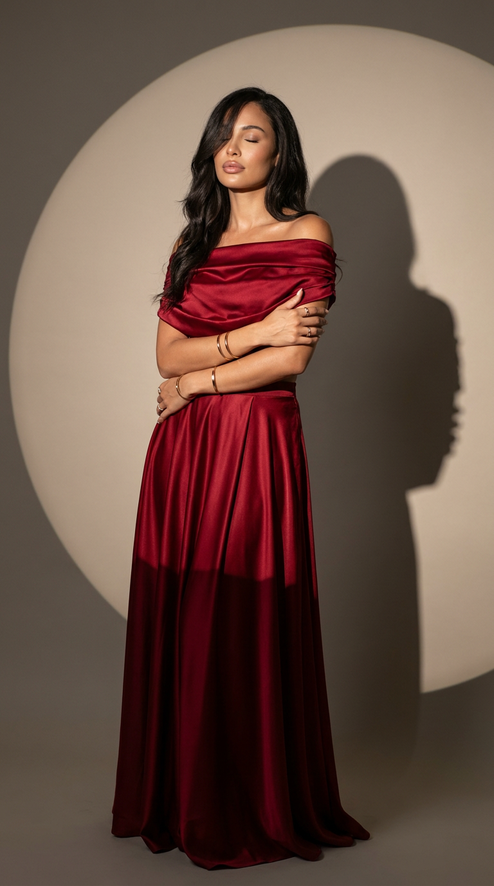
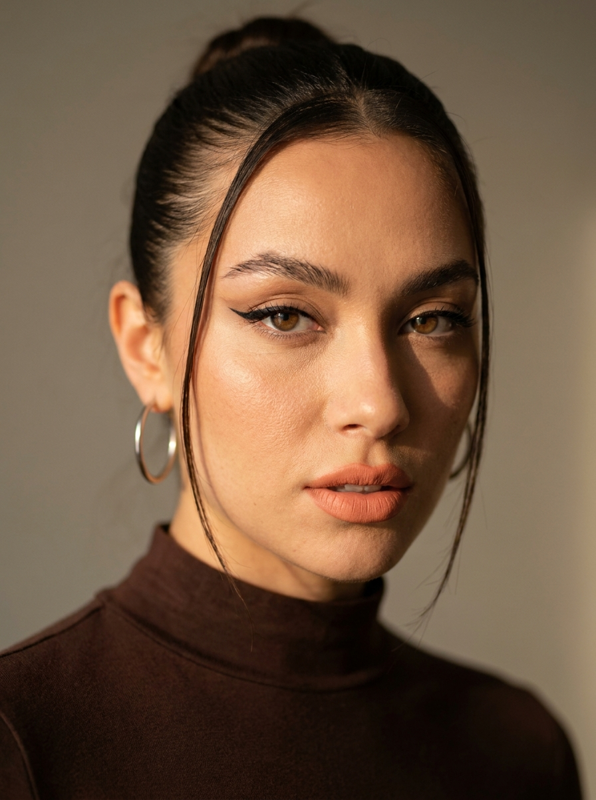
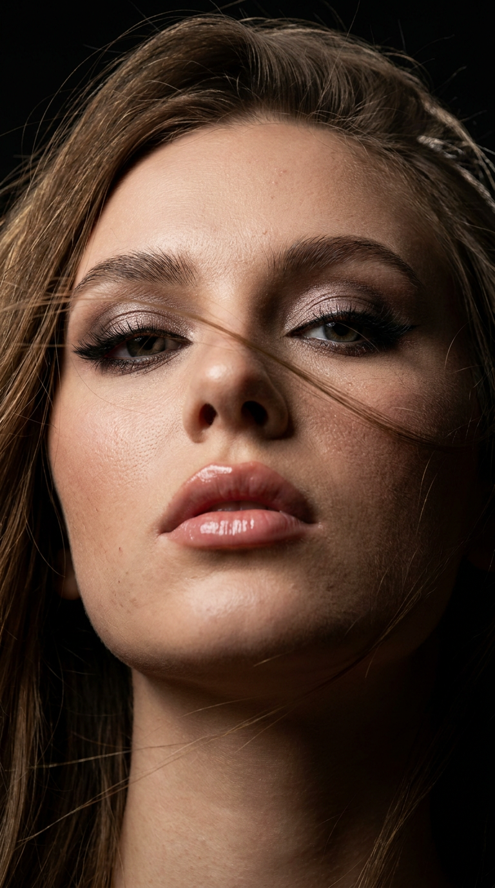
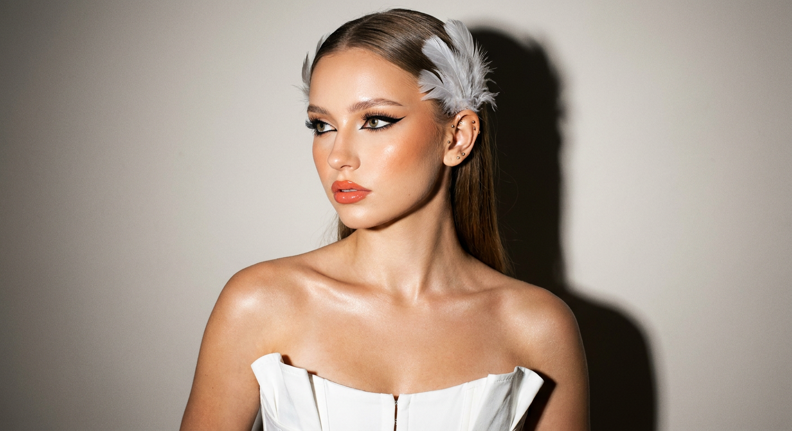
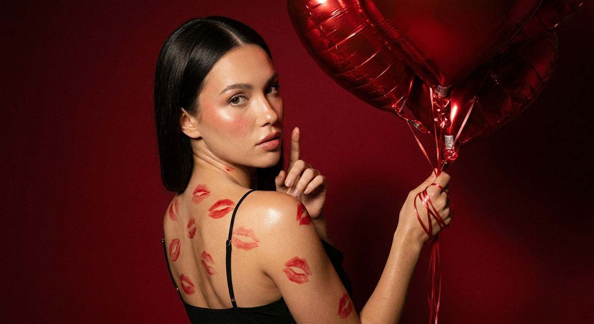
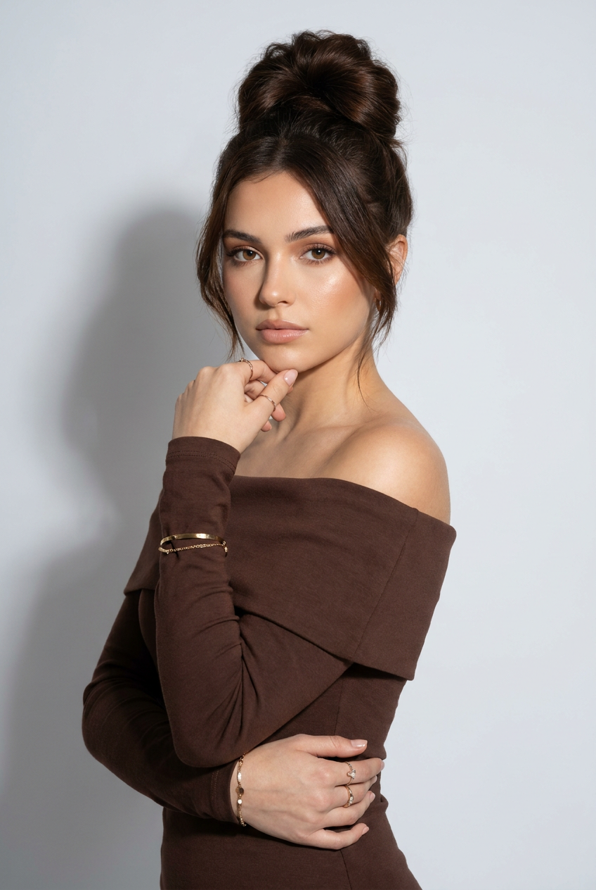
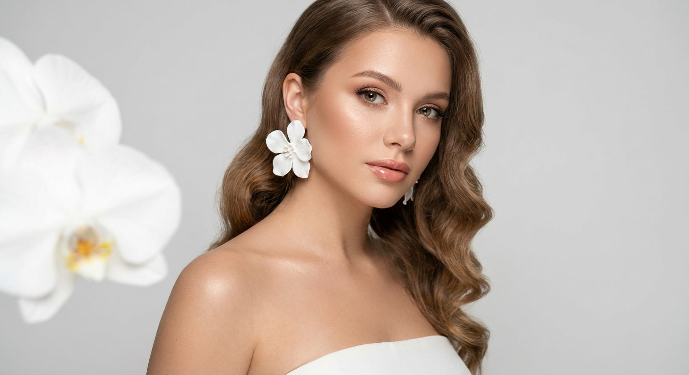
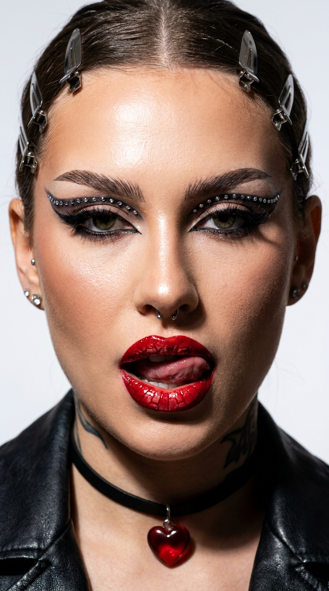
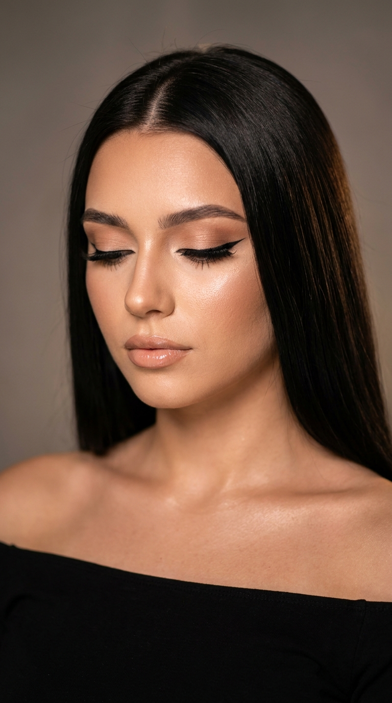
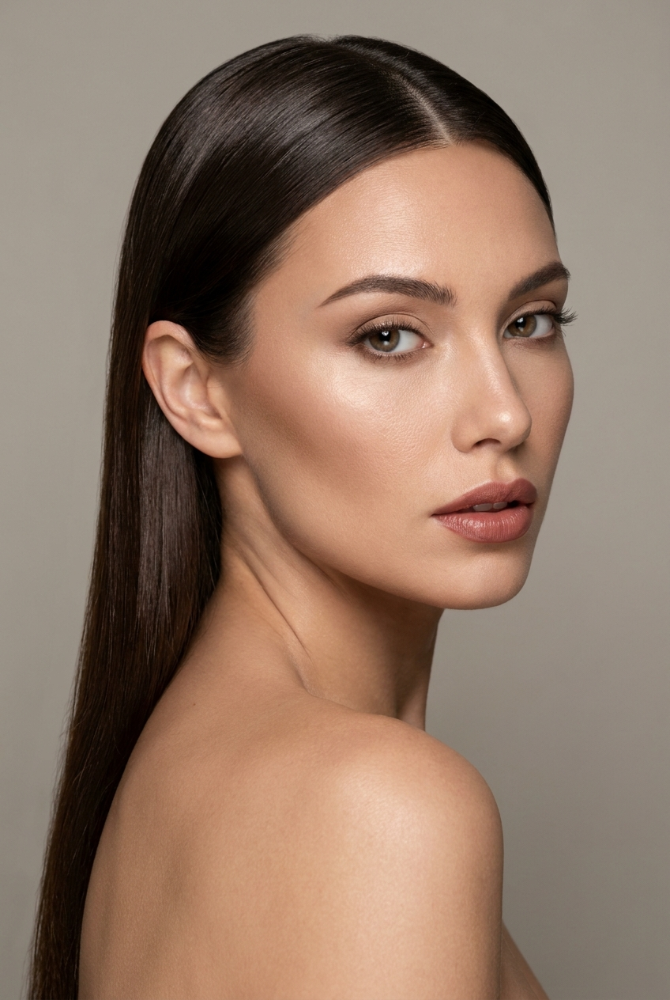

10 промптов для студийных ИИ-портретов в нейросети

Обычный портрет легко превращается в безликую картинку: нейросеть меняет черты лица, делает кожу пластиковой, а сложный свет и позу упрощает до случайного кадра. Хороший промпт задаёт не только внешность модели, но и работу камеры, композицию, макияж, фактуру одежды и настроение съёмки.
В подборке — 10 готовых сценариев для студийных ИИ-портретов. Здесь есть роскошный сатиновый образ, контрастный beauty close-up, съёмка с цветами, прямой винтажный flash, красные шары-сердца и смелый театральный макияж.
Как сгенерировать такое фото: пошагово
Нужен снимок анфас при ровном свете, лицо в кадре целиком, без тёмных очков и головных уборов. Разрешение от 1000 пикселей по короткой стороне. Чем чётче исходник, тем точнее модель повторит черты.
Выберите сценарий ниже и нажмите «Копировать» — текст уйдёт в буфер целиком, вместе с командой сохранения внешности. Эта команда стоит первой строкой и отвечает за то, чтобы на выходе было ваше лицо, а не случайное.
Кнопка «Сгенерировать» рядом с каждым промптом открывает модель в новой вкладке. Nano Banana Pro работает с референсом лица — в отличие от моделей, которые генерируют портрет с нуля и узнаваемость теряют.
Промпт — в поле ввода, портрет — через загрузку референса. Порядок значения не имеет, но без референса команда сохранения внешности работать не будет: модели нечего сохранять.
Для сторис и ленты берите 9:16, для превью и обложек — 4:3. Первый результат редко идеален: если поза или свет ушли не туда, поправьте соответствующую часть промпта и запустите заново. Обычно хватает двух-трёх итераций.
10 промптов для генерации
1. Алый сатиновый образ
Строго сохранить внешность по загруженному референсу: черты лица, пропорции, мимику и текстуру кожи без изменений. Фотореалистичный fashion-editorial портрет взрослой женщины в вертикальном формате 9:16, в полный рост или по колено. Она стоит в минималистичной студийной фотозоне, уверенно скрестив руки на груди: одна ладонь лежит на противоположном предплечье. Голова немного откинута назад, глаза закрыты, выражение расслабленное, чувственное и благородное. Мягкие пухлые губы, сияющая кожа с натуральной текстурой, длинные тёмные волнистые волосы с боковым пробором; отдельная прядь частично закрывает лицо. На модели роскошный алый или бордовый сатиновый комплект: драпированный топ со спущенными плечами и длинная юбка в тон. Тяжёлая блестящая ткань образует глубокие складки и мягкие переливы, подчёркивает ключицы и силуэт. Добавьте тонкие золотые украшения, мягкий студийный свет, дорогую сдержанную стилистику и реалистичную детализацию кожи.
2. Тёплый взгляд в камеру

Строго сохранить внешность по загруженному референсу: черты лица, пропорции, мимику и текстуру кожи без изменений. Гиперреалистичный портрет в формате 3:4, снятый на уровне глаз крупным планом. Модель смотрит прямо в объектив пристальным, уверенным и чуть напряжённым взглядом, губы слегка разомкнуты. На ней тёмно-коричневый лонгслив с высоким воротником. Волосы гладко убраны в пучок, а две тонкие уложенные пряди обрамляют лицо. Макияж графичный: чёрные стрелки, выразительно оформленные брови, матовые губы персикового оттенка. В одном ухе — крупная серебряная серьга-кольцо. Используйте тёплый направленный боковой источник: одна сторона лица погружается в драматичную глубокую тень, другая получает яркие детализированные блики. Сохраните естественную фактуру кожи, резкость на глазах и губах, объём света и реалистичную оптику портретной съёмки.
3. Ветер и чёрный фон

Строго сохранить внешность по загруженному референсу: черты лица, пропорции, мимику и текстуру кожи без изменений. Цветной фотореалистичный beauty-портрет в вертикальном соотношении 9:16, экстремально крупный план лица, шеи и ключиц. Камера расположена чуть ниже уровня лица, голова слегка запрокинута, взгляд открытый и дерзкий. Длинные волосы хаотично пересекают лицо, будто их подхватил ветер. На глазах дымчатые тени с лёгким шиммером, чёткая стрелка, густые ресницы и аккуратно оформленные брови; губы пухлые, покрыты прозрачным глянцем. Не сглаживайте кожу до пластика: должны быть видны поры и естественный рельеф. Фон полностью чёрный. Схема света состоит из одного мягкого бокового источника, слабого заполняющего света и лёгкого контровика; контраст высокий, рельеф выразительный. Наведите резкость на глазах и губах, используйте малую глубину резкости, ультрареалистичную детализацию и качество 8K.
4. Белые перья и flash

Строго сохранить внешность по загруженному референсу: черты лица, пропорции, мимику и текстуру кожи без изменений. Ультрареалистичный beauty-портрет молодой женщины в нейтральной студии, снятый с эффектом винтажной прямой вспышки. Кадр от груди до макушки, камера на уровне глаз, лицо и плечи в центре внимания, глубина резкости малая. Голова немного повернута в сторону, взгляд проходит мимо камеры, губы чуть приоткрыты, поза спокойная и редакционная. Волосы гладко зачёсаны назад, над ухом закреплены декоративные белые перья. Макияж выразительный: драматичные чёрные стрелки с вытянутым хвостиком, густые объёмные ресницы, тёплый персиковый румянец и глянцевые коралловые губы. Кожа матовая, но с сохранённой натуральной текстурой. Белый структурированный топ-корсет украшен воланами по вырезу, плечи и ключицы открыты. Добавьте несколько небольших золотых пирсингов в ухе. Сильный прямой flash должен дать характерные резкие тени и ретро-эффект.
5. Красные шары-сердца

Строго сохранить внешность по загруженному референсу: черты лица, пропорции, мимику и текстуру кожи без изменений. Поясной фотореалистичный editorial-портрет женщины в три четверти: корпус развёрнут спиной, но лицо смотрит через плечо прямо в объектив. В одной руке она держит связку металлических красных шаров в форме сердец, тонкие нити обмотаны вокруг пальцев. Вторая рука поднята к лицу, один палец едва заметно приподнят в ироничном жесте. На модели чёрное открытое платье на тонких бретелях, спина и плечи обнажены. По коже разбросаны отпечатки красной помады, создающие резкий графичный контраст. Длинные гладкие волосы с прямым пробором убраны за плечи. Свет низкий и направленный: он даёт глянцевые блики на коже и шарах, оставляя глубокие тени. Лицо мягко вылеплено, на щеках лёгкий румянец, губы влажно блестят, брови чисто очерчены. Добавьте нейтрально-тёплое освещение с лёгкой фронтальной вспышкой, мелкое плёночное зерно, видимые поры и тонкое свечение. Настроение — сдержанная роскошь, пустынный вайб и lifestyle-редактура.
6. Минималистичный серый фон

Строго сохранить внешность по загруженному референсу: черты лица, пропорции, мимику и текстуру кожи без изменений. Сверхреалистичный студийный fashion beauty-портрет совершеннолетней молодой женщины на чистом светло-сером или белом фоне. Вертикальная композиция от талии или бёдер до головы, корпус мягко развёрнут в три четверти, лицо повернуто к камере, взгляд направлен в объектив. Поза естественная и элегантная: одна рука согнута и легко поддерживает подбородок или щёку, вторая проходит поперёк талии. Атмосфера дорогой минималистичной editorial-съёмки — спокойная, современная, женственная, без лишнего декора. Используйте загруженное фото как референс лица: сохраните овал, скулы, линию челюсти, посадку глаз, нос, губы, брови, возраст и узнаваемость, не превращая модель в усреднённую фотомодель. Свет мягкий студийный, кожа с естественной текстурой и деликатным сиянием, без сильной ретуши. Детализация высокая, пропорции тела натуральные, одежда и фон лаконичные.
7. Цветок у лица

Строго сохранить внешность по загруженному референсу: черты лица, пропорции, мимику и текстуру кожи без изменений. Крупный план лица, плеч и верхней части декольте молодой женщины в светлой профессиональной студии. В композиции частично виден большой белый цветок — лилия или орхидея с мягкими изогнутыми лепестками — сбоку у лица, он создаёт передний план и дополнительную глубину. Волосы уложены в мягкие голливудские волны с объёмом у корней и плавно перекинуты на одно плечо. В ухе заметна крупная объёмная серьга в форме белого цветка, повторяющая мотив живого растения. Макияж выполнен в персиковых и нюдовых тонах: кожа атласно сияет, но не выглядит жирной, естественная текстура сохранена. Добавьте мягкий профессиональный beauty-свет, чистый светлый фон, небольшую глубину резкости и точный фокус на глазах. Черты лица, его пропорции и индивидуальность должны оставаться узнаваемыми по референсу; итог выглядит нежно, чисто и утончённо, как кадр из дорогой журнальной съёмки.
8. Красные губы и стразы

Строго сохранить внешность по загруженному референсу: черты лица, пропорции, мимику и текстуру кожи без изменений. Гиперреалистичный вертикальный портрет 9:16, экстремально близкий кадр с акцентом на лицо, макияж и украшения. Съёмка выполнена на Canon EOS R6 с объективом 50 мм, резкость высокая, качество 8K. Волосы длинные, полностью зачёсаны назад и закреплены металлическими зажимами. Макияж театральный и дерзкий: длинные чёткие стрелки украшены стразами, ресницы очень густые, брови графично оформлены. Кожа гладкая, но с естественным свечением и реалистичной текстурой. Ярко-красные губы покрыты глянцем и имеют необычный рельеф, напоминающий чешую или лаковой покрытие. На шее чёрный чокер с красным кулоном-сердцем, в носу небольшой септум, в ушах серьги. Выражение провокационное, кончик языка слегка высунут. Используйте студийный свет с чёткой прорисовкой деталей, малую глубину резкости и натуральную передачу лица без изменения его характерных черт.
9. Опущенный взгляд

Строго сохранить внешность по загруженному референсу: черты лица, пропорции, мимику и текстуру кожи без изменений. Ультрареалистичный beauty-портрет в разрешении 8K, вертикальный формат 9:16, профессиональная студийная съёмка с мягким тёплым направленным светом. Модель показана в ракурсе три четверти: голова чуть опущена и повернута в сторону, взгляд направлен вниз, веки почти сомкнуты. Камера находится на уровне лица, глубина резкости малая, кожа и макияж проработаны детально, но без пластиковой ретуши. Длинные прямые волосы идеально гладко уложены, пробор по центру, пряди свободно обрамляют лицо и создают строгую геометрию. Макияж графичный: вытянутые стрелки, густые ресницы, чётко оформленные брови, на веках тёплые сатиновые тени нюдового оттенка. Сохраните идентичность и пропорции лица по загруженному референсу, не меняйте форму глаз, носа, губ и овал. Фон нейтральный, свет подчёркивает рельеф и натуральную текстуру кожи.
10. Портрет через плечо

Строго сохранить внешность по загруженному референсу: черты лица, пропорции, мимику и текстуру кожи без изменений. Фотореалистичный studio beauty portrait в эстетике luxury editorial и high-end beauty campaign. Крупный вертикальный кадр от головы до верхней части плеч и ключиц на нейтральном фоне. Женщина слегка развёрнута корпусом в сторону, но лицо смотрит на камеру через плечо; один плечевой контур открыт. Композиция минималистичная и дорогая, без лишних предметов, всё внимание сосредоточено на лице, коже, свете и тонкой фактуре. Используйте загруженное фото как точный identity reference: сохраните форму лица, скулы, подбородок, нос, губы, брови, глаза, линию роста волос, пропорции, цветотип, возраст и узнаваемость. Не омолаживайте модель, не делайте кукольную внешность и не сглаживайте кожу до пластика. Свет мягкий, направленный, с деликатными тенями по контуру лица и естественными бликами на коже. Добавьте реалистичную текстуру, аккуратный luxury-макияж, точную фокусировку на глазах и профессиональную рекламную оптику.
Что важно учесть в этом стиле
Студийный ИИ-портрет держится на трёх опорах: понятная композиция, контролируемый свет и точное описание фактуры. Указывайте формат кадра, крупность плана, положение камеры и направление взгляда. Фраза «дорогой портрет» сама по себе почти бесполезна, а сочетание «50 мм, камера на уровне глаз, мягкий боковой источник, малая глубина резкости» задаёт модели конкретную сцену.
Для работы с лицом лучше использовать качественный референс без фильтров и сильного поворота головы. Просите сохранить пропорции, возраст и индивидуальные признаки, но не перегружайте запрос десятками повторов. Натуральная кожа получается, когда отдельно указаны поры, мелкие несовершенства и отсутствие пластиковой ретуши.
Идеи для вариаций
- Замените нейтральный фон на графитовый, молочный или дымчато-синий, сохранив ту же схему света.
- Перенесите образ в съёмку с объективом 85 мм при f/2: лицо будет выглядеть более сжатым, а фон — мягче.
- Поменяйте сатиновую одежду на бархат, шёлковую рубашку или структурированный жакет.
- Добавьте один выразительный реквизит: зеркало, прозрачную вуаль, крупную брошь или бокал.
- Сделайте серию из трёх кадров: прямой взгляд, взгляд мимо камеры и опущенные веки.
- Для обложки используйте свободное место сбоку, чтобы портрет не упирался в края кадра.
Как собрать свой промпт
Начните с технической основы: тип изображения, формат, крупность плана, ракурс и камера. Затем опишите модель и позу, после этого — волосы, макияж, одежду и аксессуары. В финале задайте фон, схему света, глубину резкости, фактуру кожи и настроение. Такой порядок помогает нейросети не потерять главные условия.
Один промпт лучше посвятить одной сцене. Если нужны красные шары, цветок и сложный костюм одновременно, часть деталей может исчезнуть. Сначала добейтесь правильного лица и композиции, затем меняйте по одному параметру. Для стабильной серии сохраняйте формат 9:16, ракурс и описание света, а варьируйте только одежду или реквизит.
Ошибки, из-за которых кадр не получается
- Слишком общая задача. Слова «красивый fashion-портрет» не объясняют, где стоит модель, куда падает свет и что находится в кадре.
- Противоречивый свет. Одновременно заданные жёсткий flash, мягкая дымка и равномерное освещение дают плоскую или неестественную картинку.
- Перегруженный реквизит. Несколько крупных предметов спорят с лицом и меняют композиционный центр.
- Отсутствие параметров кадра. Без формата, крупности плана и положения камеры нейросеть может обрезать плечи, руки или украшения.
- Чрезмерная ретушь. Запрос на идеальную кожу часто убирает поры, мимику и сходство с референсом.
- Случайная смена лица. Используйте один чистый референс, не смешивайте фотографии разных людей и проверяйте результат после каждой итерации.
Частые вопросы
Как сделать такое ИИ-фото бесплатно?
Для первых попыток подойдут Kandinsky и Шедеврум: они позволяют генерировать изображения без оплаты, но качество сходства и управление референсом могут быть ограничены. В Krea AI и Arena.ai доступны дополнительные режимы и модели, однако бесплатные лимиты, очередь и функции работы с лицом меняются. Бесплатная генерация часто требует нескольких попыток, а точное совпадение черт не гарантируется.
Почему нейросеть меняет лицо на каждом кадре?
Текстовое описание не фиксирует личность на сто процентов. Используйте один хорошо освещённый референс, добавляйте параметры сходства и не меняйте одновременно ракурс, возраст, причёску и выражение лица. Для серии сохраняйте seed, если сервис поддерживает такую настройку.
Как получить натуральную кожу без эффекта пластика?
Укажите естественную текстуру, видимые поры, мягкие несовершенства и отсутствие сильной ретуши. Не сочетайте это с формулировками вроде «идеальная фарфоровая кожа» или «безупречное сглаживание». Мягкий боковой свет обычно лучше показывает рельеф, чем равномерная фронтальная подсветка.
Какой формат выбрать для студийного портрета?
Для сторис, обложек и вертикальных публикаций используйте 9:16. Формат 3:4 удобен для поясного портрета и карточки в профиле. Если нужны плечи, ключицы или реквизит по краям, заранее напишите крупность плана и оставьте в промпте свободное пространство вокруг модели.